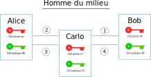

Sécuriser une communication#
Les chiffrements, quels qu’ils soient, ne suffisent pas pour sécuriser une communication. De nombreuses personnes sont piégées du fait d’établir une communication avec une personne ou un organisme qui usurpe l’identité de la personne ou de l’organisme souhaité.
Comment être sûr qu’on communique bien nos données aux bonnes personnes ou aux bons organismes ?
Une attaque assez répandue du nom de l’homme du milieu (man on the middle) consiste à s’immiscer dans une communication en se faisant passer pour chacun des participants.
Par exemple, un attaquant nommé Carlo se place entre Alice et Bob dans leur communication et intercepte tous les messages chiffrés.
{kind=link}
Alice démarre la communication en demandant la clé publique de Bob.
Bob envoie sa clé publique à Alice qui est interceptée par l’attaquant Carlo.
Carlo remplace la clé publique de Bob par sa propre clé publique et l’envoie à Alice.
Alice reçoit la clé publique de Carlo et chiffre un message pour Bob et lui envoie.
L’attaquant intercepte le message chiffré et le déchiffre avec sa clé privée. Il peut même le modifier. Ensuite il chiffre le message avec la clé publique de Bob et lui envoie le message chiffré.
Alice et Bob ont communiqué sans se rendre compte que leurs messages étaient interceptés, déchiffrés voire modifiés par un attaquant.
Les certificats#
Les certificats nous assurent de communiquer avec la bonne personne ou le bon organisme (banque, assurance, médical, commerce,…) appelé ou consulté. Les certificats authentifient les clés publiques reçues et ainsi assurer l’identité de la personne ou de l’organisme avec qui on communique.
Un certificat est délivré par un organisme de confiance qui certifie la véritable identité du demandeur. Cet organisme est une autorité de certification AC.
Ces certificats numériques attestent de la véritable identité d’une personne ou d’un organisme pour avoir l’assurance d’établir une communication sécurisée.
Pour que Bob et Alice soient certains de communiquer en confiance entre eux, Bob demande la création d’un certificat auprès d’une autorité de certification AC.
Voici les différentes étapes
Bob demande auprès d’une autorité de certifcation AC le chiffrement de sa clé publique. L’AC chiffre la clé publique de Bob avec sa clé privée. Elle crée un certificat qui contient la clé publique de Bob chiffrée et des éléments d’authentification comme le nom, l’adresse du site web, adresse mail, etc. On dit que l’AC signe la clé publique de Bob.
Alice démarre une communication avec Bob qui lui envoie sa clé publique et son certificat.
Alice demande la clé publique de l’autorité de certification AC et déchiffre le certificat envoyé par Bob. Alice en extrait alors la clé publique de Bob qu’elle peut comparer avec la clé publique que Bob a aussi envoyé.
Si les clés publiques sont les mêmes, une communication sécurisée peut s’établir. Sinon, des alertes seront signalées.
{kind=link}
Protocole HTTPS#
Le protocole HTTPS est un protocole HTTP auquel on ajoute un protocole d’authentification par certificat pour sécuriser la communication sur le web.
Certificat
Le format standard d’un certificat est le format X.509 qui est un fichier binaire contenant les informations suivantes:
l’identifiant de l’autorité de certification;
l’identifiant de l’organisme ou personne certifiée;
la date de validité du certificat;
la clef publique de l’organisme ou personne certifiée;
la signature du certificat. Il existe trois niveau de certification selon les informations dont dispose l’autorité de certification.
Détail du protocole HTTPS
Le protocole HTTPS est la réunion des protocoles HTTP (requête web) et TLS (sécurité des communications).
Le protocole TLS ajoute une phase permettant l’authentification du serveur et la mise en place d’une communication sécurisée avec une clef de chiffrement symétrique appelée clef de session. Lorsque cette clé de session est connue du client et du serveur, la communication chiffrée peut commencer. Toutes les requêtes sont chiffrées avant envoi et toutes les réponses sont déchiffrées à la reception. La communication est bien sécurisée :
l’authentification par certificat empêche toute attaque du type homme du milieu;
le chiffrement empêche la lecture des contenus lors de la transmission (routeurs, serveurs intermédiaires).
La mise en place de cette communication sécurisée dite poignée de main TLS se déroule en 5 étapes:
Le client envoie un messge initial au serveur avec des informations le concernant : algorithmes cryptographiques utilisés, navigateur, …
Le serveur envoie sa réponse au client contenant le certificat au format X509 signé par une AC. Le certificat contient la clef publique du serveur.
Le client vérifie le certificat avec la clef publique de l”AC et les informations qu’il contient comme la date de validité.
Le client et le serveur conviennent d’une clef de session partagée:
soit en chiffrant une clef choisie par le client avec la clef publique du serveur;
soit en utilisant la méthode Diffie-Hellman.
Le serveur est authentifié par le client et ils ont une clef de session partagée. Ils peuvent échanger des contenus avec le protocole HTTP de façon sécurisée.